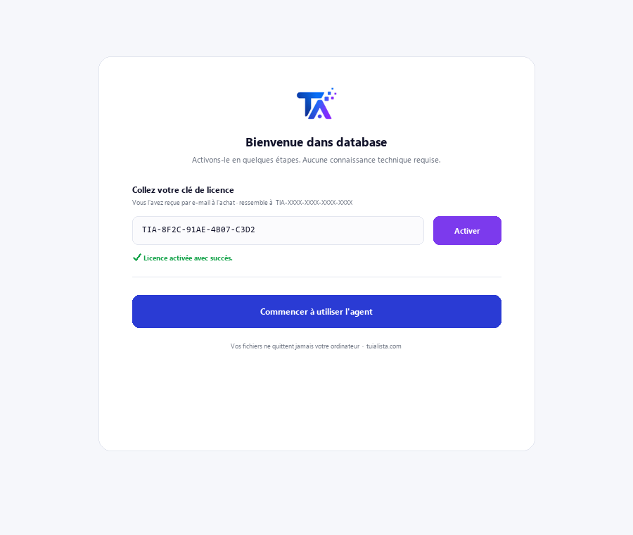
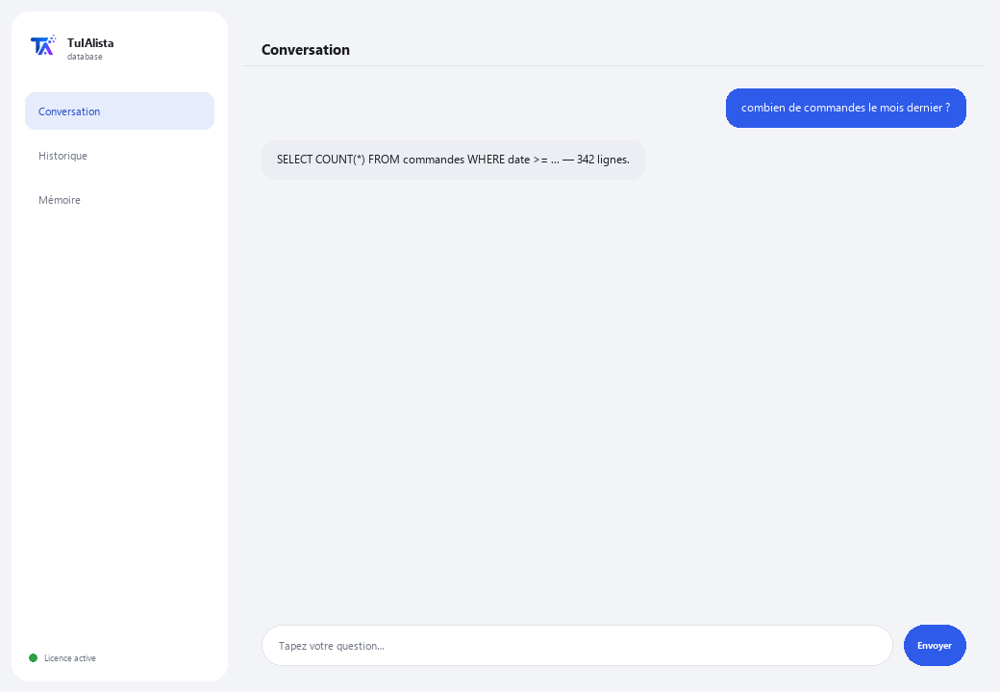

Agent Base de données
Transforme vos questions en requêtes vers votre base de données, sans que vous ayez besoin de connaître le SQL. Lecture seule : il ne modifie ni n'endommage jamais vos données.
Que résout-il et de quoi avez-vous besoin ?
Dans beaucoup d'entreprises, les données importantes vivent dans une base de données, mais seule l'équipe technique sait les interroger. Chaque fois que quelqu'un a besoin d'un chiffre, il doit demander à l'IT d'écrire une requête et attendre. Cet agent traduit votre question dans votre langue en une requête SELECT et vous montre le résultat — sans risque d'endommager quoi que ce soit.
- Vous avez besoin de : votre clé de licence (TIA-XXXX-XXXX-XXXX-XXXX) et des données de connexion à votre base (SQLite, PostgreSQL ou MySQL). Configuration technique — normalement réalisée par votre service informatique.
- Premier résultat : vous installez, activez votre licence, configurez la connexion et posez directement des questions en langage normal — pas de commandes à apprendre.
- Votre base de données ne quitte jamais votre infrastructure — la connexion et les requêtes s'exécutent localement.
soporte@tuialista.com ou visitez tuialista.com/soporte — nous répondons généralement le jour même.1 Ce que fait cet agent
Vous lui dites à quelle base de données se connecter puis vous lui posez des questions en langage normal :
- Traduit votre question en une requête SELECT (lecture seule) et l'exécute.
- Vous montre la requête SQL qu'il a générée et le résultat.
- N'exécute jamais d'opérations qui modifient des données (INSERT, UPDATE, DELETE, DROP...) : un validateur de sécurité bloque toute requête qui n'est pas en lecture.
- Fonctionne avec SQLite, PostgreSQL et MySQL (SQLite est prêt à l'emploi ; MySQL et PostgreSQL nécessitent d'installer leur extension).
Résultat : toute personne autorisée peut interroger les données sans dépendre de l'IT pour écrire la requête, et sans risque d'endommager quoi que ce soit.
2 Installation
Pour Windows. Cet agent a une étape supplémentaire par rapport aux agents qui lisent des dossiers : la connexion à votre base de données se configure à part.
Téléchargez l'installateur depuis tuialista.com/descargar (agent Base de données) et ouvrez-le. Il crée un raccourci sur votre bureau avec le logo — pas besoin de Python ni de terminal.
Double-cliquez sur la nouvelle icône. Collez votre clé de licence (reçue par e-mail à l'achat) et cliquez sur Activer. Contrairement aux autres agents, il ne vous demande pas de choisir un dossier — cet agent se connecte à une base de données, pas à des fichiers locaux.
Définissez les variables d'environnement TARGET_DB_TYPE (sqlite, postgres ou mysql) et TARGET_DB_URL avec les données de votre base. Pour SQLite, vous n'avez besoin que du chemin vers le fichier .db. Cette étape est normalement réalisée par le service informatique.

3 Comment l'utiliser
L'agent ouvre une fenêtre de discussion, comme une app de messagerie — pas un écran noir de programmeur. Pas de commandes à mémoriser : vous écrivez votre question en langage normal dans le champ de texte en bas, cliquez sur Envoyer (ou Entrée), et l'agent génère la requête, l'exécute et vous montre le SQL, les colonnes et les résultats :

L'agent transmet à l'IA le schéma de vos tables (noms des tables et colonnes) pour construire la bonne requête. Les données ne sont lues que lorsque la requête SELECT s'exécute, et sont limitées à un maximum de 100 lignes par réponse. Écrivez quitter (ou exit) pour terminer.
4 Exemples d'usage courant
Un décompte rapide
combien de commandes ont été passées le mois dernier ?
Un total avec filtre
combien ont totalisé les ventes de la région nord cette année ?
Un top
donne-moi les 5 produits les plus vendus en quantité
Un croisement entre tables
quels clients n'ont passé aucune commande dans les 90 derniers jours ? — l'agent construit le SELECT avec les JOIN nécessaires selon votre schéma et vous montre le résultat (jusqu'à 100 lignes).
5 Questions fréquentes
Peut-il endommager ou supprimer mes données ?
Quelles bases de données prend-il en charge ?
Mes données sont-elles envoyées sur internet ?
Ai-je besoin d'internet pour l'utiliser ?
Pourquoi me montre-t-il le SQL généré ?
Combien de résultats renvoie-t-il ?
Dans quelle langue répond-il ?
Que se passe-t-il si l'agent génère un SQL incorrect ?
Puis-je changer de base de données ?
A-t-il besoin d'un utilisateur spécial de base de données ?
6 Résolution de problèmes
“Type de BD non supporté”
Erreur de connexion à MySQL ou PostgreSQL
SQLite : “unable to open database file”
“Seules les requêtes en lecture (SELECT) sont autorisées”
Affiche “Licence invalide” ou demande de se reconnecter
“Aucun fournisseur d'IA configuré”
Aucune de ces solutions n'a résolu votre problème ? Écrivez-nous directement — nous serons ravis de l'examiner avec vous.
soporte@tuialista.com ou visitez tuialista.com/soporte — nous répondons généralement le jour même.7 Confidentialité
Votre base de données et ses données ne quittent jamais votre infrastructure.
- L'agent se connecte à votre base de données localement (sur votre appareil ou votre réseau) et y exécute les requêtes. Les résultats ne sont envoyés à aucun serveur.
- Seul le schéma (noms des tables et colonnes) et votre question sont envoyés à l'IA, pour rédiger la requête SELECT. Les données renvoyées par la requête ne sont pas transmises au moteur d'IA.
- La seule chose qui transite par internet est : (1) une vérification que votre licence est active, et (2) le schéma + votre question pour générer le SQL.